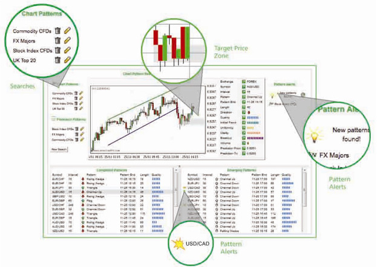
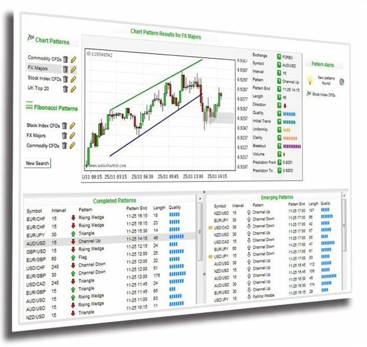

Autochartist技术分析软件
由：


描 述 ：
全新的图表形态分析软件
Autochartist 是全新的图表形态分析软件，为你提供24小时实时市场动态观察，完善的搜索功能，为你提供更精准的
市场预测。Autochartist 是一個針對外匯、股票、指數和商品市場進行圖表模式識別及形態分析的先進的自動圖表分析
軟件。自动识别图表模式和斐波纳契模式，如三角形、楔形、预测和回撤等形态每個月Autochartist能每个月擁有3500
個交易信號的辨別能力，通過圖像或是聲響提示信號，讓您可以轻松简易的識別各种圖表形態。
Autochartist 自動圖表分析軟件24小時不間斷爲您進行技術形態掃描分析，以圖表和斐波那契兩種形態呈現， 帮助投
资者使用作为測量市場超賣或超買水平的基準指標。Autochartist备有独特的推薦和警報功能，帮助即时投资经验不多
的用户获取有效的入市信息。
Autochartist技术分析软件内容
Autochartist可视化强大识图表工具
大多数交易平台都能够提供图表解决方案，但Autochartist还能为您提供可视化的学习方法，让你轻易的了解 大多数交易平台都能够提供图表解决方案，但Autochartist还能为您提供可视化的学习方法，让你轻易的了解 大多数交易平台都能够提供图表解决方案，但Autochartist还能为您提供可视化的学习方法，让你轻易的了解 大多数交易平台都能够提供图表解决方案，但Autochartist还能为您提供可视化的学习方法，让你轻易的了解
Autochartist独特之处
大多数交易平台都能够提供图表解决方案，但Autochartist还能为您提供可视化的学习方法，让你轻易的了解 大多数交易平台都能够提供图表解决方案，但Autochartist还能为您提供可视化的学习方法，让你轻易的了解 大多数交易平台都能够提供图表解决方案，但Autochartist还能为您提供可视化的学习方法，让你轻易的了解 大多数交易平台都能够提供图表解决方案，但Autochartist还能为您提供可视化的学习方法，让你轻易的了解
强有力的自定义搜索功能
大多数交易平台都能够提供图表解决方案，但Autochartist还能为您提供可视化的学习方法，让你轻易的了解 大多数交易平台都能够提供图表解决方案，但Autochartist还能为您提供可视化的学习方法，让你轻易的了解 大多数交易平台都能够提供图表解决方案，但Autochartist还能为您提供可视化的学习方法，让你轻易的了解 大多数交易平台都能够提供图表解决方案，但Autochartist还能为您提供可视化的学习方法，让你轻易的了解
 